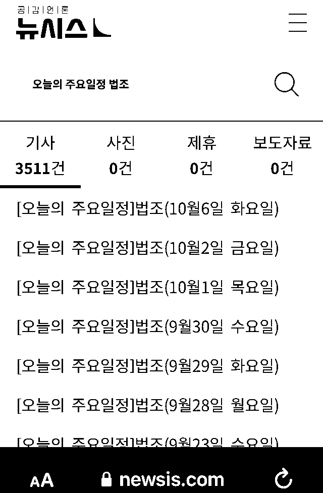

26. 10. 7
오늘 이번 한국 방문 일정의 대부분을 확정했는데요. 아마 내일은 남은 일정을 다 확정할 것입니다. 제가 이 개월 이내에 죽을 수도 있고 다시 당신을 만날 수도 있지만 저는 어느 경우도 지금 제가 매일 여기서 당해야 하는 사태보다 좋다고 하고 있습니다. 일본 사람들은 너무 흉포하니까 제가 죽으면 서로 잡아먹기를 시작할 거예요. 그런데 저는 이번이 마지막 한국 방문이 될 수도 있으니까 가능한 한 여행을 즐길 생각이랍니다. 안녕히 주무세요 한국인이시고 아마존 KIX3에서 일을 하신 Lee씨, 제가 사랑하는 유일하신 분.
(Wifi spot에서) 2審は無罪だったそうです。
尹前大統領、世論調査疑惑で二審無罪
https://www.chosun.com/jp/politics-national-jp/2026/10/07/FOLRAMIEQNFQ7BGXQ2TZEFVMKY/
今日も韓国訪問の計画を立てるのに一日の大半を費やすことになると思うのでインターネットに何かを書くことも夕方まで無いと思います。今日尹前大統領に判決が下されるのは下記記事にある政治資金法違反容疑についてです。これは1審で懲役2年が出ているようです。下記に「尹被告側は控訴する方針」とありますが、それから約3ヶ月経った今日、控訴審(2審)判決が下されるということです。下記をお読みになれば分かる通りこれは非常戒厳とは直接関係のない事件です。
韓国のソウル中央地裁は１３日、政治ブローカーから無償で世論調査結果を受け取ったとして政治資金法違反罪に問われた尹錫悦前大統領に対し、懲役２年の実刑判決（求刑は懲役４年）を言い渡した。尹被告側は控訴する方針。 地裁は、尹被告が大統領選に向け活動していた２０２１年、金建希夫人と共謀し、１４回にわたり計約２８００万ウォン（約３００万円）相当の世論調査を無償で実施してもらったと指摘。尹被告が２２年の国会議員補選で所属政党「国民の力」の特定人物を公認するよう政治力を行使したのは、ブローカーの依頼を受けたものであり、「（無償の世論調査が）一部影響した」と認定した。
(7. 13) 前大統領に懲役２年 政治資金法違反罪―韓国地裁
https://www.jiji.com/sp/article?k=2026071300832&g=int
오늘의 부엌 영상:
https://drive.google.com/file/d/1f1fCqr4vw2OObREt9mCFt2UC8JYYU93y/view?usp=drivesdk
https://drive.google.com/file/d/1FyI2NYlCrxJfczNHdTZrjQvkM6yYS8tU/view?usp=drivesdk
NYダウ(現地時間10/6終値)
https://finance.yahoo.co.jp/quote/%5EDJI
恐らく日本で流れている噂の一つに「尹前大統領も曺大法院長も悪い人物ではないが、この方々を批判した宮島が韓国人と結婚出来る訳がない」というのがあるかと思います。昨日この噂に対抗する上で丁度良いニュースが出たので紹介します。これは昨日の国政監査での質疑応答ですが、「まさか第2の尹前大統領を夢見ているのではないか」(혹시 제2의 윤석열을 꿈꾸는 겁니까?)という質問に曺大法院長は「そのようなお言葉はあまりに侮辱的で嘆かわしいことです」(그런 말씀은 너무 모욕적이고 슬픈 일입니다)と答えたそうです。また曺大法院長は「(尹前大統領が宣布した)12•3非常戒厳は違憲」(12·3 비상계엄은 위헌적)だとも述べたといいます。
조희대 대법원장은 국정감사 증인 선서를 거부하면서도, 12·3 비상계엄 동조 의혹이나 업무추진비 유용 의혹에는 반박했습니다. (中略) 여야 설전, 지켜만 보던 조 대법원장은 의혹 제기엔 적극 반박했습니다.
[손솔/국회 법제사법위원/진보당 : "혹시 제2의 윤석열을 꿈꾸는 겁니까? 지금 법복 입고 정치하는 것이 아니냐…."]
[조희대/대법원장 : "그런 말씀은 너무 모욕적이고 슬픈 일입니다."]
(中略) 조 대법원장은 12·3 비상계엄은 위헌적이라며 협조한 일 없다고, 동조 의혹도 부인했습니다.
조희대 ‘선서 거부’에 여야 충돌…‘제2의 윤석열이냐’ 질문에는 “모욕적”
https://news.kbs.co.kr/news/mobile/view/view.do?ncd=8679297
下記は今日のNewsisの裁判スケジュールからの引用です。(ページの下の方にあるのでスクロールして下さい)
오후 2시 ‘무상 여론조사 관련 정치자금법 위반 혐의’ 윤석열·명태균 항소심 선고기일, 서울고법 형사7부, 404호
[오늘의 주요일정]법조(10월7일 수요일)
https://mobile.newsis.com/view/NISX20261006_0003815920
私が以前作成した尹夫婦の裁判の早見表には尹前大統領の代表的な5件の裁判を載せましたが、下記記事にあるように尹前大統領は刑事事件だけで8件を抱えています。今日判決が出るのは私が作成したリストにはなかった事件です。混同しないようお願いします。
(6. 12) 윤석열 8개 형사재판 절반 1심 마무리…내달까지 두 건 더 선고예정
https://www.yna.co.kr/view/AKR20260612080800004
下記のニュース映像にも裁判の一覧が出ていたと思います。
(9. 26再掲) 下記は尹夫婦の刑の確定状況についての記事です。ここにあるように尹前大統領は1件(特殊公務執行妨害)のみ大法院まで行って刑が確定しています。金建希はまだ1つも確定しておらず、全員合議体(전합)で判決が出ればようやく1つ刑が確定します。昨日書いたように刑が確定しないと拘置所での拘束期間が満了後釈放される恐れがあります。
尹재판 10개 중 확정 1개뿐…김건희는 전합 심리
https://m.yonhapnewstv.co.kr/news/MYH2026092610150799L
안녕하세요? 오늘은 윤 전 대통령의 이른바 '명태균 여론조사 무상수수' 사건 2심 선고공판이 열린다는데요 아마 전에 위증 사건에 관해 무죄가 선고되었을 때처럼 일본 사람들이 저에게 해를 줄 것이라고 보입니다. 다만 저는 한국방문 플랜 세우기에 집중해야 합니다. 오늘도 오전 10시경에 마르야스에 가요.
윤 '여론조사' 오늘 2심 선고...'의사 합치' 판단 유지될까
https://m.ytn.co.kr/news_view.php?key=202610070023239581
下記記事によると(よく分かりませんが曺大法院長は国政監査に出席したようです)昨日曺大法院長が金建希の3審(상고심)判決の日程を問う質疑(김건희 여사의 상고심 선고 일정을 묻는 박균택 민주당 의원 질의)に「裁判の事項に関する事は申し上げることが出来ないということを了解して下さるようお願いします」(재판 사항에 관한 것은 말씀드릴 수 없음을 양해해주시길 바란다)と答えたとの事ですから、これによっても金建希の最高裁判決はまだ出ていないとお分かりになるかと思います。
조 대법원장은 6일 오전 국회에서 열린 국정감사에서 인사말을 통해 "대법원장의 대법관 제청에 관하여 증언하도록 요구하는 것은 삼권분립과 사법부 독립의 원칙을 훼손할 염려가 있다"며 증인 선서를 거부했다. (中略) 또 김건희 여사의 상고심 선고 일정을 묻는 박균택 민주당 의원 질의에는 "재판 사항에 관한 것은 말씀드릴 수 없음을 양해해주시길 바란다"고 했다.
(10. 6) 증인선서 거부, 원고 꺼낸 조희대…"간섭" "위헌" 6분14초 작심 발언
https://www.news1.kr/society/court-prosecution/6311466
26. 10. 6
우선 부산에 도착할 날에 숙박하는 호텔을 찾고 있는데요. 오해를 줄 수도 있으니까 이번에는 가능한 한 큰 침대가 있는 모텔을 이용하지 않을 것입니다. 최근에 부산이 인기있는 관광지가 된 것 같으니 이 점에도 좀 걱정하고 있습니다. 아마 제가 Kondadhana장로처럼 허깨비를 띠고 있다( https://www.tipitaka.net/tipitaka/dhp/verseload.php?verse=133 )고 의심하실 것이지만 가능하시면 저를 보러 오시길 바랍니다. 안녕히 주무세요 한국인이시고 아마존 KIX3에서 일을 하신 Lee씨, 제가 사랑하는 유일하신 분.
今朝手紙に書いたように虚偽の噂を流している方が私の今回の韓国訪問を利用しようとする可能性はあると思っています。行き帰りの飛行機については昨日公開してしまったので既に利用されているかも知れません。ホテルについては検討中ですが、事前には公開せず当日に知らせる形を取ろうかとも思います。(今回は複数のホテルを予約する可能性もあります)
下記の検索例で出力されるのはハングルで書かれた記事ばかりですが、気になる方は定期的に下記を実行してみて下さい。
https://m.news.nate.com/search?q=김건희+전원합의체
https://m.news.nate.com/search?q=김건희+한덕수+이상민
https://m.news.nate.com/search?q=김건희+구속기간
https://m.news.nate.com/search?q=%EA%B9%80%EA%B1%B4%ED%9D%AC+%EA%B5%AC%EC%86%8D%EA%B8%B0%EA%B0%84
(Wifi spot에서) ざっと調べてみた限り金建希の最高裁判決や拘束期間に関する新しい情報は出ていないようでした。皆様も調べてみて下さい。
今朝出た下記の記事に「김건희 상고심을 비롯해 한덕수, 이상민 등 내란 주요 피고인들 재판도 줄줄이 지연되고 있다」という発言が登場しますから、少なくとも判決が出ていないことはお分かりになるかと思います。
한병도 더불어민주당 원내대표는 올해 국정감사가 시작된 6일 "민생과 국가 미래를 논의해야 할 국감이 정쟁의 장으로 변질되지 않도록 국민의힘의 발목잡기엔 단호하게 대응하겠다"면서 대법원 국정감사와 관련해 조희대 대법원장의 증인 출석을 촉구했다. (中略) 한 원내대표는 "217일째 대법관 공백이 이어지는 가운데 형사 사건 상고심 처리 기간은 무려 한 달 가까이 늘어났다"며 "10월 말 구속기간 만료를 앞둔 김건희 상고심을 비롯해 한덕수, 이상민 등 내란 주요 피고인들 재판도 줄줄이 지연되고 있다"고 했다.
한병도 "국감, 국힘 발목잡기 단호 대응…조희대 증인 출석하라"
https://www.news1.kr/politics/assembly/6311036
저의 까까머리를 보이기 위해 오늘은 특별히 이 영상을 냅니다:
https://drive.google.com/file/d/1urw0LKweRLfKF_yQJBWWwxNbtkPwp3-1/view?usp=drivesdk
私のヒロスケという名については下記記事に大輔(ヒロスケ)さんの事例がありますから、これも参考にしてみて下さい。
('22년 6월) 港区エレベーター事故から16年 なくならぬ戸開走行に遺族「焦り」
https://www.asahi.com/sp/articles/ASQ635V2HQ62UTFL01P.html
恐らく私がこれまで一度も韓国に行ったことがないとの噂が流れており、それが原因で攻撃を受けたり変な噂を流されたりしているのだと思います。下記に2年程前に城南市に行った際の映像をいくつかアップロードしますから、参考にしてみて下さい。食堂はいずれもスネ(수내)駅近くのものであり、へジャンク店ははポンカ(本家)へジャンクという名前だったと思います。キンパはデイリーキンパで買ったものです。
https://drive.google.com/file/d/10zQCVw5arNU1eBJO4_H9hAleT2qGrvL3/view?usp=drivesdk
https://drive.google.com/file/d/1JPxvgU-wXImrjoqboev8IjmgoZWWMFFb/view?usp=drivesdk
https://drive.google.com/file/d/1gpVTJRKfjqRztGN08DD0NltOsb6QvUHU/view?usp=drivesdk
https://drive.google.com/file/d/1BnJmpnK1D4UAoNHp1VPoM9q1XVo3vJeb/view?usp=drivesdk
https://drive.google.com/file/d/1kvf8-ZUXNGZieGxo7RKF4BZzPXaRpzEB/view?usp=drivesdk
https://drive.google.com/file/d/1bDuWhaOlF1VoobODWjRNL5OSFQKtVSc7/view?usp=drivesdk
https://drive.google.com/file/d/1LVKbSzYb5SB2sk_2Mj-YPjWEVU5GRjBh/view?usp=drivesdk
오늘의 부엌 영상:
https://drive.google.com/file/d/1YzE8Sl6YQcNlYeIRKf7Zz9tbKgbk-A19/view?usp=drivesdk
https://drive.google.com/file/d/18tFNMQQ1O6-YSYoYLMw3h--Mu9ygAwIm/view?usp=drivesdk
NYダウ(現地時間10/5終値)
https://finance.yahoo.co.jp/quote/%5EDJI
下記手順はソルラル連休に合わせて作成したものですが、開天節(の振替休日)に裁判が開かれないこともこれで確認が可能ですので試してみて下さい。
STEP1: 下記の検索用キーワードをコピーして下さい。
오늘의 주요일정 법조
STEP2: 下記のリンクにアクセスして検索欄(モバイル版ではメニューの中にあります)に先ほどコピーしたキーワードを貼り付けて下さい。
https://www.newsis.com/
日本の皆様が「韓国ではソルラル連休中に裁判所も休む」ということを確認する為のツール
https://anissatta.github.io/home-project/kim2/
上記の手順を実行してみると、10/3(土), 10/4(日), 10/5(月)の日程が存在しないことがお分かりになると思います。これらはそれぞれ開天節, 日曜日, 開天節の振替休日でありいずれも土日か公休日です。

下記はNewsisの「今日の」裁判スケジュールです。下記の通り今日は尹前大統領(윤석열 전 대통령)の内乱首謀(내란 우두머리)事件の2審(항소심)公判が開かれるそうです。
오전 10시 '12·3 비상계엄' 내란 우두머리 등 혐의 윤석열 전 대통령 외 7명 항소심 18차공판, 서울고법 형사12-1부, 417호
[오늘의 주요일정]법조(10월6일 화요일)
https://mobile.newsis.com/view/NISX20261005_0003814469
안녕하세요? 저는 일간에 반드시 일본인이 아닌 존재(한국인 또는 허무)가 될 것이니까 너무 비판을 내진 않겠지만 일본 쓰레기들이 잠시만 코로나 바이러스가 퍼지고 있었을 때처럼 가까이에 오지 않길 바랍니다. 오늘도 오전 10시경에 마르야스에 가요.
韓国に到着後SIMカードを買いますから、動画ファイル等のアップロードはそれによって可能になります。現在は低速モード(月初に一旦リセットされましたが、現在はまた低速になっています)モバイル通信を通してGoogle Driveにファイルをアップロードしています。Documents(by Readdle)というアプリを使うとそういったアップロードが時間をかければ可能であることについては以前説明しました。ホームページにアップロードしている白黒の画像はImage Magick(というプログラム)の-monochromeと-stripオプションを用い加工しています。殆どの方は理解出来ないでしょうが、一度これらの白黒画像のファイルサイズを一般的な(写真等の)画像のそれと比較してみて下さい。
今週の裁判スケジュールについては下記を開くか、下記ページの右上にある検索欄に「이번주 법조 일정」と入力し各自で探してみて下さい。(私は皆様がご自身でこれを探すようこの文章を書いています。存在しないものについて気付かせるにはこのような方法しかありません)
https://www.lawtimes.co.kr/news/articleList.html?sc_serial_code=SRN36
26. 10. 5
제가 아마존에 있었을 때 한 바닷가에 간 적이 있는데요 당신이 아시는지 잘 모릅니다. 그때부터 약 칠 년이 지났는데도 저는 거의 같은 상태입니다. 일본 사람들이 낸 저주같은 일이 우리 사이에 오래 있었지만 저는 만약 신이 있다면 반드시 그런 저주가 해소될 것이라고 하고 있습니다. 만약 제가 한국인이신 당신을 다시 만날 수 있으면 저는 이 한 일 속에 신이 있음을 볼 거예요. 이번주 내에 플랜을 세우지만 부산 뿐만 아니라 다른 지역으로도 가 볼 수도 있습니다. 아마 역사가 있는 절도 있을 것이지만 분들이 제가 김건희가 석방되길 바라며 기도를 하고 있을 것이라고 하시면 안되니까 절엔 안 갈 것입니다. 오늘은 잘 자고 내일 잘 플랜을 세우기로 해요. 안녕히 주무세요 한국인이시고 아마존 KIX3에서 일을 하신 Lee씨, 제가 사랑하는 유일하신 분.
ローチケという会社を通してまず航空券を買いました。(下記はこの会社から送られてきたメールの内容です) 金建希の拘束期間延長はまだ確定していないと思いますが、残金に限りがあるのと何となく梨泰院惨事があった29日は避けたかったのでこのような日程になりました。ホテルについては明日以降探してみます。変な噂が流れそうなのでソウル周辺や寺院等には近付かず(金建希釈放を祈っているのではないかなどという噂が流れかねないからです)、出来るだけ旅を楽しもうと思います。
【ローチケ】海外航空券 お支払い確認 (申込番号：*****) ローチケ[旅行]申込番号：***** ローチケ[旅行]をご利用いただき、誠にありがとうございます。 ご入金を確認いたしました。 航空券の準備が整い次第、別途メールにてご案内いたします。今しばらくお待ちくださいませ。 ■ご搭乗について ご搭乗手続きには「eチケット」が必要です。 ご利用の航空会社が定めるチェックイン締め切り時間前までにご搭乗手続きをお済ませください。 締め切り時間を過ぎますと、ご搭乗できませんのでご注意ください。 ---------------------------------------- 宮島 大介 様のマイページはこちら ***** ご予約の確認・キャンセル・領収書発行が可能です ---------------------------------------- ------------------------ ■海外旅行保険のご案内 海外渡航中は、病気や事故、盗難など予期せぬトラブルが発生する可能性がございます。 万が一に備え、海外旅行保険へのご加入をおすすめしております。 詳細は下記よりご確認いただけますので、ぜひご検討くださいませ。 https://wcs.tokiomarine-nichido.co.jp/mfa_mypage/marine-passport/app_insurance/os_rp/topmenu?&cd=96151029T9074#/ ------------------------ ━━━━━━━━━━━━━━━━━━━━ お申し込み内容 ━━━━━━━━━━━━━━━━━━━━ 【ローチケ旅行 申込番号】 ***** 【申込者名】 宮島 大介 様 【搭乗者名（姓/名 性別 年齢）】 MIYAJIMA HIROSUKE MR 様 37 歳 【フライトスケジュール】 2026/10/13 関西 発 → 釜山 着 ZE0914便 738 予約クラスW エコノミー 2026/10/26 釜山 発 → 関西 着 ZE0915便 738 予約クラスR エコノミー ※時間はすべて現地時間となります。 ※0:00am～2:00amに出発する便のご搭乗手続きは、前日夜となります。 ※受託手荷物が含まれていない場合がございます。航空会社にご確認ください。 ※コードシェア便は提携する航空会社の機材・乗務員にて運航され、機内持ち込み手荷物、受託手荷物の制限、 遅延・欠航などへの対応、事前座席指定等は運航する提携航空会社の規定が適用となります。 【ご旅行代金】 海外航空券(大人) 13,000 円 x 1= 13,000 円 燃油サーチャージ(大人) 17,200 円 x 1= 17,200 円 施設使用料(大人) 3,310 円 x 1= 3,310 円 国際観光旅客税(大人) 3,000 円 x 1= 3,000 円 その他諸税(大人) 320 円 x 1= 320 円 現地諸税(大人) 2,210 円 x 1= 2,210 円 取扱い手数料(大人) 4,400 円 x 1= 4,400 円 事務手数料 800 円 x 1= 800 円 ----------------------------------------- 合計 44,240 円 ＜ご注意＞ ・航空券代金や燃油サーチャージが変動した場合、お支払い後に追加で ご請求させていただく場合もございます。 ━━━━━━━━━━━━━━━━━━━━━━━━━━━━━━━━━ 【重要】ご確認ください ━━━━━━━━━━━━━━━━━━━━━━━━━━━━━━━━━ ・各国の査証(ビザ)情報・パスポート残存期間条件などは必ずご自身にてご確認ください。 ・パスポートに記載の情報（お名前・生年月日・性別）とお申し込み内容が1文字でも異なる場合はご搭乗いただけません。（姓名逆の入力含む） ※婚姻などにより姓が変更になる場合、パスポートに記載のお名前でお申し込みください。 ・ご入力内容とパスポート記載情報が異なり、当日出入国ができなかった場合、当社は責任を負いかねます。 ・ご入力に誤りのあるお客様は、マイページよりご予約をキャンセルの上、再度正しい情報にてお申し込みください。 ・ご入金後のキャンセルは所定の取消料が発生します。 ▼外務省海外安全サイト http://www.anzen.mofa.go.jp/ 【リクエストを希望される方へ】 機内食・バシネット・その他特別な手配については、ご利用の航空会社によりご案内が異なります。 必ず各航空会社サイトにて詳細をご確認ください。 【受託手荷物について】 航空会社・お申し込み航空券により、条件が異なります。 詳細はeチケットまたは航空会社へご確認ください。 なお、受託手荷物許容量を超えた場合、航空会社既定により超過手荷物料金がかかります。 航空券の手配は旅行業約款（手配旅行契約の部）により承りました。 詳しくはこちらの旅行条件書をご覧ください。 https://www.ent.lawson.co.jp/kiyaku_travel-rule15/ ━━━━━━━━━━━━━━━━━━━━ ※お電話での問い合わせは承っておりません。 下記、「よくある質問（FAQ）」をご確認の上、問題解決できない場合は「よくある質問（FAQ）」内のお問い合わせフォームよりご連絡をお願いいたします。 なお、営業時間内のご回答となりますので、予めご了承ください。 ローチケ[旅行] https://tour.l-tike.com/ よくある質問（FAQ） https://faq.l-tike.com/0002/ ※各種お問い合わせは、申込者様からのみ承ります。 ※キャンセル受付について、弊社へのキャンセル依頼が弊社営業時間外の場合、翌営業日での取り扱いとなります。 (土・日・祝祭日・年末年始・月～金曜 10:00～17:00以外のお申し込み ⇒翌営業日扱い) 旅行契約締結後のキャンセルは、「航空会社規定の取消料＋弊社取消手続料金」を別途申し受けます。 航空会社既定の取消料は、マイページよりご確認ください。 弊社取消手続料金は、旅行業務取扱料金をご参照ください。 https://www.ent.lawson.co.jp/kiyaku_travel-rule14/ 株式会社 ローソンエンタテインメント（JATA正会員） 観光庁長官登録 旅行業第1728号 営業時間：平日10:00～17:00 (土・日・祝祭日・年末年始は休業) ━━━━━━━━━━━━━━━━━━━━ このメールは送信専用アドレスから自動送信しておりますので、ご返信いただけません。
下記のようなメールも来ていました。
【ローチケ】海外航空券 eチケット発行のご案内 (申込番号：*****) ローチケ[旅行]申込番号：***** ローチケ[旅行]をご利用いただき、誠にありがとうございます。 海外航空券の発券手続きが完了しました。マイページより「eチケット」をご確認ください。 ---------------------------------------- 宮島 大介 様のマイページはこちら ***** ご予約の確認・キャンセル・領収書発行が可能です ---------------------------------------- ------------------------ ■海外旅行保険のご案内 海外渡航中は、病気や事故、盗難など予期せぬトラブルが発生する可能性がございます。 万が一に備え、海外旅行保険へのご加入をおすすめしております。 詳細は下記よりご確認いただけますので、ぜひご検討くださいませ。 https://wcs.tokiomarine-nichido.co.jp/mfa_mypage/marine-passport/app_insurance/os_rp/topmenu?&cd=96151029T9074#/ ------------------------ ■ご搭乗について ご搭乗手続きには「eチケット」が必要です。 ご利用の航空会社が定めるチェックイン締め切り時間前までにご搭乗手続きをお済ませください。 締め切り時間を過ぎますと、ご搭乗できませんのでご注意ください。 ■スケジュール変更について ご予約便のスケジュール変更が発生する場合がございます。 原則、弊社よりご案内はいたしませんので、ご搭乗前に必ずご自身にてご確認いただき、空港へお越しください。 ※時間はすべて現地時間となります。 ※0:00am～2:00amに出発する便のご搭乗手続きは、前日夜となります。 ※受託手荷物が含まれていない場合がございます。航空会社にご確認ください。 ※コードシェア便は提携する航空会社の機材・乗務員にて運航され、機内持ち込み手荷物、受託手荷物の制限、 遅延・欠航などへの対応、事前座席指定等は運航する提携航空会社の規定が適用となります。 ＜ご注意＞ ・航空券代金や燃油サーチャージが変動した場合、お支払い後に追加で ご請求させていただく場合もございます。 ━━━━━━━━━━━━━━━━━━━━━━━━━━━━━━━━━ 【重要】ご確認ください ━━━━━━━━━━━━━━━━━━━━━━━━━━━━━━━━━ ・各国の査証(ビザ)情報・パスポート残存期間条件などは必ずご自身にてご確認ください。 ・パスポートに記載の情報（お名前・生年月日・性別）とお申し込み内容が1文字でも異なる場合はご搭乗いただけません。（姓名逆の入力含む） ※婚姻などにより姓が変更になる場合、パスポートに記載のお名前でお申し込みください。 ・ご入力内容とパスポート記載情報が異なり、当日出入国ができなかった場合、当社は責任を負いかねます。 ・ご入力に誤りのあるお客様は、マイページよりご予約をキャンセルの上、再度正しい情報にてお申し込みください。 ・ご入金後のキャンセルは所定の取消料が発生します。 ▼外務省海外安全サイト http://www.anzen.mofa.go.jp/ 【リクエストを希望される方へ】 機内食・バシネット・その他特別な手配については、ご利用の航空会社によりご案内が異なります。 必ず各航空会社サイトにて詳細をご確認ください。 【受託手荷物について】 航空会社・お申し込み航空券により、条件が異なります。 詳細はeチケットまたは航空会社へご確認ください。 なお、受託手荷物許容量を超えた場合、航空会社既定により超過手荷物料金がかかります。 航空券の手配は旅行業約款（手配旅行契約の部）により承りました。 詳しくはこちらの旅行条件書をご覧ください。 https://www.ent.lawson.co.jp/kiyaku_travel-rule15/ ━━━━━━━━━━━━━━━━━━━━ ※お電話での問い合わせは承っておりません。 下記、「よくある質問（FAQ）」をご確認の上、問題解決できない場合は「よくある質問（FAQ）」内のお問い合わせフォームよりご連絡をお願いいたします。 なお、営業時間内のご回答となりますので、予めご了承ください。 ローチケ[旅行] https://tour.l-tike.com/ よくある質問（FAQ） https://faq.l-tike.com/0002/ ※各種お問い合わせは、申込者様からのみ承ります。 ※キャンセル受付について、弊社へのキャンセル依頼が弊社営業時間外の場合、翌営業日での取り扱いとなります。 (土・日・祝祭日・年末年始・月～金曜 10:00～17:00以外のお申し込み ⇒翌営業日扱い) 旅行契約締結後のキャンセルは、「航空会社規定の取消料＋弊社取消手続料金」を別途申し受けます。 航空会社既定の取消料は、マイページよりご確認ください。 弊社取消手続料金は、旅行業務取扱料金をご参照ください。 https://www.ent.lawson.co.jp/kiyaku_travel-rule14/ 株式会社 ローソンエンタテインメント（JATA正会員） 観光庁長官登録 旅行業第1728号 営業時間：平日10:00～17:00 (土・日・祝祭日・年末年始は休業) ━━━━━━━━━━━━━━━━━━━━ このメールは送信専用アドレスから自動送信しておりますので、ご返信いただけません。


사진:
https://drive.google.com/file/d/1yJIsv-tQykPVAx81HCx-xuouEWfnQqVf/view?usp=drivesdk
https://drive.google.com/file/d/1AhpI7j-eJLUj9osEN4cG7pluu5l5b_OG/view?usp=drivesdk
동영상:
https://drive.google.com/file/d/1xDE27N8MVkpZw68_O4t243Iz6B7eA57G/view?usp=drivesdk
https://drive.google.com/file/d/1JlR7r1Y9vHUIr_HpIeMeLyapzOyGANvE/view?usp=drivesdk
https://drive.google.com/file/d/12BU3TQpPpcEmHF1voFWCFFIEa1rEX4_e/view?usp=drivesdk
下記は曺大法院長の国政監査(국정 감사; 略して국감)への不参加についての記事です。この方は先日の国軍の日(10. 1)の行事にも欠席していたようです。
조희대 "국정감사서 밝히겠다"더니‥국감 이틀 앞두고 "증언 못 해"
https://imnews.imbc.com/replay/2026/nwdesk/article/6855723_37004.html
私が使っている環境ではまだ週間裁判スケジュールが取得できていないのですが、今週は下記の尹前大統領の世論調査収受事件の2審宣告があるそうなので裁判が全く無いということはないと思います。(この事件名から分かるようにこれは内乱首謀罪のような大きなものではありません。無罪判決が出る可能性もあるかも知れません)
정치 브로커 명태균씨로부터 여론조사를 무상으로 받은 혐의로 1심에서 징역 2년을 선고받은 윤석열 전 대통령 항소심 선고가 이번 주 이뤄진다. 4일 법조계에 따르면 서울고법 형사7부(구회근 부장판사)는 오는 7일 오후 2시 윤 전 대통령과 명씨의 정치자금법 위반 혐의 항소심 선고기일을 연다. 윤 전 대통령은 배우자인 김건희 여사와 공모해 2021년 6월∼2022년 3월 명씨로부터 여론조사 58차례를 무상으로 받은 혐의로 재판에 넘겨졌다. 1심은 공소사실 중 여론조사 14차례를 무상 수수했다고 인정해 윤 전 대통령에게 징역 2년과 추징금 1천396만여원을 선고했다.
尹부부 유무죄 엇갈린 '명태균 여론조사'…이번주 尹 2심 선고
https://www.yna.co.kr/view/AKR20261003046800004
今週の裁判スケジュールについては下記を開くか、下記ページの右上にある検索欄に「이번주 법조 일정」と入力し各自で探してみて下さい。今日は開天節の振替休日ですので裁判は開かれないはずです。
https://www.lawtimes.co.kr/news/articleList.html?sc_serial_code=SRN36
今日が開天節の振替休日であることは下記に書かれてあったと思います。
2026年・2027年韓国の祝祭日完全ガイド
https://japanese.visitkorea.or.kr/svc/contents/contentsView.do?vcontsId=140045
오늘의 부엌 영상(결국 날씨 뉴스를 사용했습니다):
https://drive.google.com/file/d/10NIxW8GMyI8rKddZ9D6vMp_zVnMg09HW/view?usp=drivesdk
https://drive.google.com/file/d/1zHXiLyzvMTqo90ea-tUnX4RNwRfeiWeH/view?usp=drivesdk
전국 흐리고 곳곳 비…오후부터 기온 하락[오늘날씨]
https://mobile.newsis.com/view/NISX20261004_0003814071
PS: 당신도 아시는 것이니까 이걸 말하지만 전부터 소문을 내고 있을 수 있는 니시카와라는 일본 사람은 정신병자이랍니다. 저의 방침은 다음과 같이 말할 수 있습니다. 제가 한국인이신 당신과 결혼할 수 없을 경우엔 저는 그대로 죽겠습니다.
안녕하세요? 어제 말한 바와 같이 일단 부산이나 대구를 방문하는 방식으로 계획을 세워 봅니다. 그런데 제가 어제 느낀 건 제가 외국의 뉴스에 언급해 왔기 때문에 일본 사람들이 저의 머리가 이상하다고 생각하고 그런 소문이 그대로 한국으로 퍼졌을 가능성이 있다는 점입니다. 외국의 뉴스는 물론 일본에서도 신문 등이 보도하고 있지만 세상 대부분의 사람들이 거의 관심이 없어서 그런 뉴스를 내지 않는 매체도 있는 것 같습니다. 한국 분들은 그런 나라가 있을 리가 없다고 하실 것이지만, 역시 일본은 한 특수한 국가일 것이라고 저는 이같이 보고 있습니다. 앞으로도 윤석열과 김건희 그리고 조희대 대법원장에 대해 말할 때도 있을 것인데요 기타에 대해선 거의 언급하지 않을 것입니다. 부엌 영상을 낼 땐 다우존스 지수나 닛케이 평균 주가 등의 숫자를 사용하기로 하지만 전날이 거래소 휴일일 경우에 그런 숫자 대신에 연합뉴스(또는 중앙일보) 속 최신기사 URL의 마지막 부분(알파벳과 숫자로 구성된 일)을 사용할 것입니다. 오늘도 오전 10시경에 마르야스에 가요.
26. 10. 4
저는 이달이 '기억과 애도의 달'이라고 알았지만 이미 약속한 일이니까 이달에 한국에 가기로 했습니다. 오는 이십구일보다 더 전에 서울이 아닌 부산이나 대구를 방문할까 생각하고 있는 중인데요. (왠지 모르지만 이런 가운데에 서울에 가는 것이 안좋은 일이라는 느낌이 드니까) 제가 말해 온 일이 기독교도 분들을 화내게 했을 수도 있으니까 앞으론 이상한 말을 삼가하고 더 신중할 것입니다. 당신이 이미 저를 떠나시고 다른 사람과 결혼하셨다고 해도 한국에선 결혼 후에도 성이 바꾸지 않으니까 알 수가 없는데요. 다만 저는 마지막까지 해 가야 합니다. 아마 수일 동안 한국에 있고 일본에 다시 돌아올 것인데 지옥에 가기 전의 잠시간 휴가가 될 거예요. 안녕히 주무세요 한국인이시고 아마존 KIX3에서 일을 하신 Lee씨, 제가 사랑하는 유일하신 분.
이태원 4주기 '기억과 애도의 달' 선포‥160번째 희생자 사진 걸려
https://imnews.imbc.com/news/2026/society/article/6855188_36918.html
下記のニュース記事(映像)も今日出たものです。
대법원 관계자는 "전원합의 기일을 몇 차례나 열지는 정해져 있지 않다"며 "선고 시점은 사건 검토와 심리 진행 상황에 따라 달라지는 것이라 예상할 수 없다"고 밝혔습니다. 김건희 특검은 구속기한 만료 전까지 3대 의혹 사건의 선고기일이 잡히지 않을 경우 김 씨 매관매직 사건 상고심에서 추가 구속영장을 청구할 방침입니다.
김건희 3대 의혹 전합 심리 시작…선고 언제쯤?
https://m.yonhapnewstv.co.kr/news/MYH20261004102431PAA
私が数ヶ月前から履いていた、ホームセンターで買った靴が原因で何らかの噂が流れていた可能性もありますので、今後はこの靴を履かないことにします。私は以前履いていた靴の靴底の一部が剥がれていたのでこれを買ったのですが、下記のハンギョレ新聞掲載の漫画に登場する曺大法院長が履かれている靴が何故かこれとよく似ていたので(靴底の白い部分といい)韓国でも何か良からぬ噂が流れているのでは、と思いました。
희대의 만행 [그림판]
https://www.hani.co.kr/arti/cartoon/hanicartoon/1279133.html

(再揭) クロネコヤマトについてもう一度書いておくと、噂を流していたと思われる契約社員(灰色の制服を着た社員)は関西ゲートウェイ(茨木にあるセンター)にて私が派遣社員として夕方から午後10時頃まで働いていた際に、クールでないフロアのA(アルファ)ブロックにいた方です。私が韓国のLeeさんと結婚した場合にどのような仕事をするのかは分かりませんが、場合によってはクロネコヤマトが困ることになるかも知れません。最近気になっているのはクロネコヤマトのドライバーの方々です。恐らく私が買い物等に出かける時刻は把握されていると思いますが、あまりに頻繁に見かけるので本来の業務指示を無視して私を偵察しに来ているのではないかとも思います。
(再掲) 今週の裁判スケジュールについては下記を開くか、下記ページの右上にある検索欄に「이번주 법조 일정」と入力し各自で探してみて下さい。私も後でWifiスポットに行った際に探してみます。(明日(月曜日)は開天節の振替休日ですので裁判は開かれないはずです) * 開天節の影響等で今日出ない可能性もありますが、一応夕方まで検索し続けてみて下さい。そして出てきたら記事の作成時刻を確認して下さい。
https://www.lawtimes.co.kr/news/articleList.html?sc_serial_code=SRN36
恐らくハングルの読み書きが出来ない為に金建希の事件等についての私の説明を信じることが出来ないという方もおられると思います。下記の英語媒体に必ず金建希についてのニュースが出るとは限りませんが、一度これらのニュースサイトの検索欄に'Kim Keon Hee'と入力してみて下さい。
The Korea Herald
The Korea Times
The Chosun Daily
https://www.chosun.com/english/
Seoul Economic Daily
The Herald Business
https://mbiz.heraldcorp.com/en
The Asia Business Daily
KBS WORLD
http://world.kbs.co.kr/service/index.htm?lang=e
SBS NEWS
https://mnews.sbs.co.kr/english/newsMain.do
以前紹介した下記の日本語の記事に「特別検察官は大法廷の審理状況を見極め、拘束期限までに結論が出るのが難しいと判断した場合、この別事件の上告審で追加の拘束令状を請求する方針だ」とあるように、最高裁判決が出ない場合に検察が拘束令状を請求することはほぼ確実であるようです。またこれまで金建希に対するこのような拘束令状請求が却下されたことは一度もないはずですので、私は金建希が10月末に釈放される可能性は低いと思っています。ですので今週中に韓国訪問の準備はほぼ済ませてしまおうかとも考えています。前回は偶々九老区のホテルに宿泊したのですが、これが原因で私が金建希が好きだといった噂が流れた可能性もあるので(九老区に金建希が収監されているソウル南部拘置所があるからです)今回は九老区から離れた所に留まることにします。
大法廷での結論が出ないまま拘束期限を迎え、キム・ゴニ氏が釈放される可能性もある。拘束期限は10月31日までとなっている。 これを受け、特別検察官はキム・ゴニ氏に対する追加の拘束令状請求を検討している。キム・ゴニ氏は22日、人事上の便宜を図る見返りなどとして各種金品を受け取ったとする別の事件で、二審で懲役5年を言い渡され、翌日に上告した。 特別検察官は大法廷の審理状況を見極め、拘束期限までに結論が出るのが難しいと判断した場合、この別事件の上告審で追加の拘束令状を請求する方針だ。
(9. 30) 韓国最高裁、金建希氏の上告審で初めての審理…拘束期限は10月末
https://www.afpbb.com/articles/-/3655268?act=all
今朝手紙に書いたように金建希の最高裁判決についての日程が一向に明らかにならないので10月末に拘束期間満了となる金建希に対して追加の拘束令状が発付されるか否か、言い換えれば金建希が10月末に釈放されるか否かによって韓国訪問の計画を立てることにします。これは金建希が半永久的ではないにせよ、釈放されないことが確かなものとなった場合に韓国に行くということです。これについてのニュースは恐らく日本でも報道されるだろうと思います。またこのような発表をすることによって人々から受ける迫害がやや軽減されるかと思いますので、中日関係についてはあまり述べないことにします。(私は日本の方々が事実を理解することは絶対に無く、中日関係が改善することも絶対に無いと思っています)
안녕하세요? 총명한 한국인이신 당신은 어제 제가 말한 중일 관계에 대한 문제를 이해하셨을 것이지만 오늘도 아침부터 소음이 심했으니까 아마 쓰레기 같은 일본 사람들에겐 효과가 없었을 것 같습니다. 일본 쓰레기들은 이상한 건물 내에 살고 있는 컬트 교단 신도들과 같네요. 그들의 무의식 속에 있는 공통된 일은 외국인을 배제하자는 소리이랍니다. 쓰레기 같은 일본 사람들은 '외국인을 배제하자. 다만 중국의 돈을 받고 싶다'고 하고 있는 것 같아요. 그런 사람들 사이에 있어서 다카이치 씨가 지지를 받지 않을 리가 없고, 우리가 박해를 당하는 건 당연할지도 모릅니다. 오늘도 오전 10시경에 마르야스에 갑니다.
下記は今朝出た全員合議体(日本での大法廷に相当)が行う金建希の事件の審理についてのニュース記事(映像)ですが、これには新しい情報は何も無いようです。
[앵커] 청와대와 사법부 간 갈등으로 대법관 한 자리가 장기 공백에 놓인 가운데 전원합의체에 회부된 김건희 씨의 3대 의혹 상고심 심리가 본격 시작됐습니다. 김 씨의 구속 기간은 이번 달 말 종료되는데, 전원합의체 선고 기일은 아직 잡히지 않았습니다.
'재제청 갈등' 속 전합 심리...김건희 구속만료 전 결론?